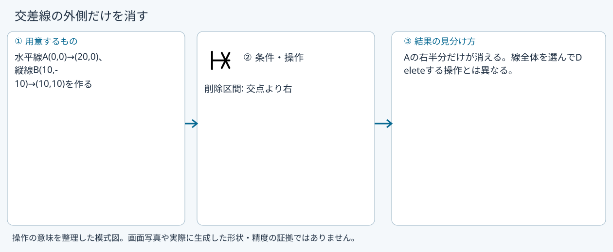

トリム
具体例: 交差線の外側だけを消す

準備
水平線A(0,0)→(20,0)、縦線B(10,-10)→(10,10)を作る
操作手順
- トリムを選ぶ
- AのX=15付近を指して消える区間を確認する
- クリックする
設定: 削除区間: 交点より右
結果を確認
Aの右半分だけが消える。線全体を選んでDeleteする操作とは異なる。
取消・やり直し
未確定入力をEscで取り消します。道具を終えるときは選択(V)または別の道具へ切り替えます。 確定済みの文書変更はCtrl+Z、やり直しはCtrl+Yです。保存・書出し済みのファイルはUndoの対象ではありません。
進めない場合
線の上に置くと、消える区間(いちばん近い交点の間)が破線で見えます。押すと消えます。
対象欄と3Dの強調を照合し、必要な線・面・部品を各役割へ指定します。処理中は計算表示を確認し、取消が可能な処理は取消を使います。
Windows版の操作画面